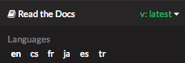

Localization of Documentation¶
Note
This feature only applies to Sphinx documentation. We are working to bring it to our other documentation backends.
Read the Docs supports hosting your docs in multiple languages. There are two different things that we support:
- A single project written in another language
- A project with translations into multiple languages
Single project in another language¶
It is easy to set the Language of your project. On the project Admin page (or Import page), simply select your desired Language from the dropdown. This will tell Read the Docs that your project is in the language. The language will be represented in the URL for your project.
For example,
a project that is in Spanish will have a default URL of /es/latest/ instead of /en/latest/.
Note
You must commit the .po files for Read the Docs to translate your documentation.
Project with multiple translations¶
This situation is a bit more complicated.
To support this,
you will have one parent project and a number of projects marked as translations of that parent.
Let’s use phpmyadmin as an example.
The main phpmyadmin project is the parent for all translations.
Then you must create a project for each translation,
for example phpmyadmin-spanish.
You will set the Language for phpmyadmin-spanish to Spanish.
In the parent projects Translations page,
you will say that phpmyadmin-spanish is a translation for your project.
This has the results of serving:
phpmyadminathttp://phpmyadmin.readthedocs.io/en/latest/phpmyadmin-spanishathttp://phpmyadmin.readthedocs.io/es/latest/
It also gets included in the Read the Docs flyout:
Note
The default language of a custom domain is determined by the language of the parent project that the domain was configured on. See Alternate Domains for more information.
Note
You can include multiple translations in the same repository,
with same conf.py and .rst files,
but each project must specify the language to build for those docs.
Note
You can read Manage Translations to understand the whole process for a documentation with multiples languages in the same repository and how to keep the translations updated on time.